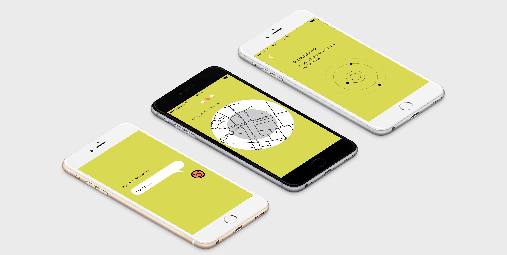
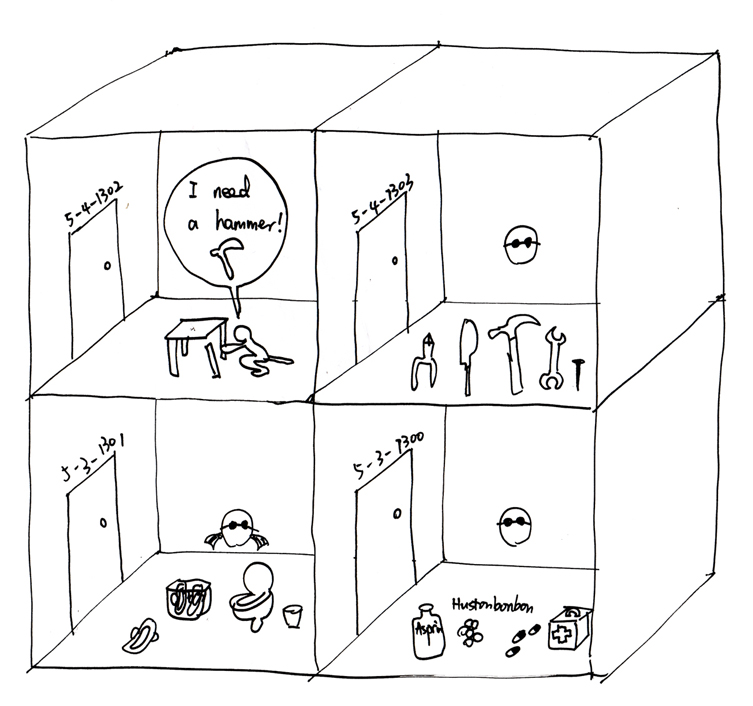
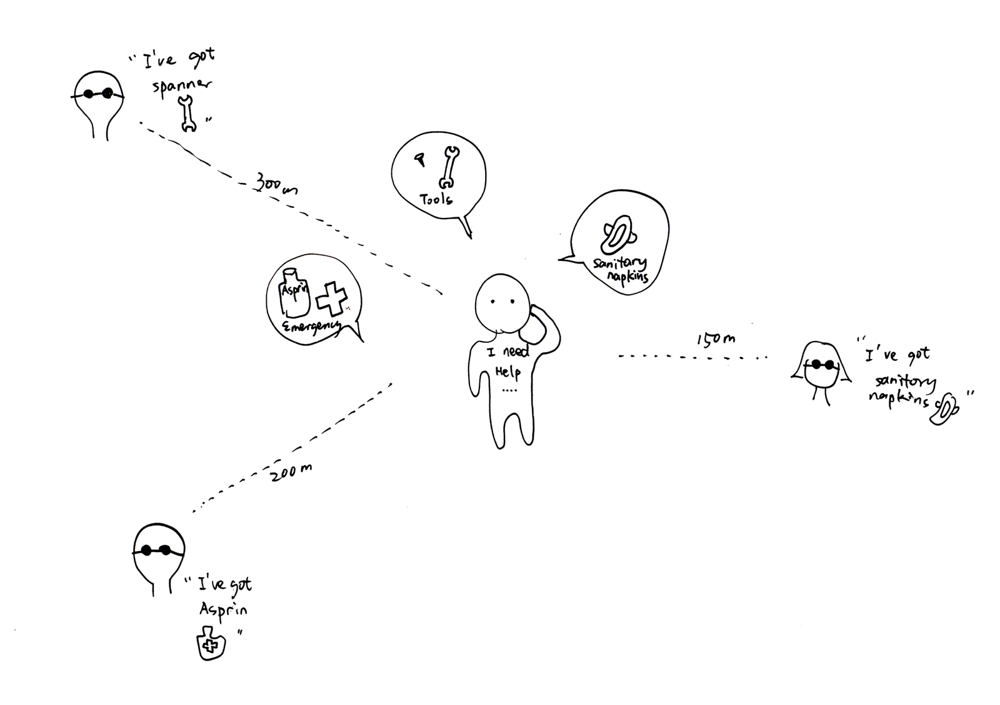
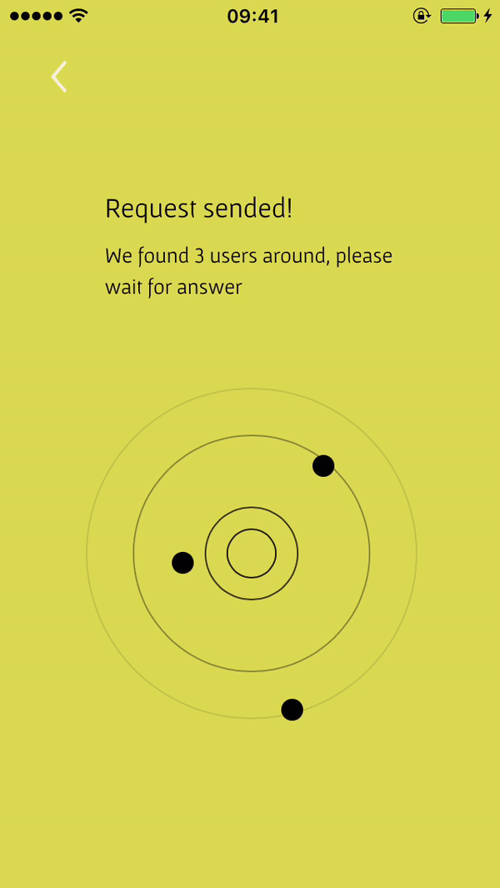

Supervised by Prof. Carola Zwick
Semester 4
Tools:
Ionicframework, html, css, angular Js
Teamwork:
Xinyue Yang, Hanwen Cheng
Idea:
To organize and get impromptu help discreetly within your neighborhood.
Motivation
I had the embarrassing problem to ask somebody for sanitary napkins when my period came,
because I didn‘t have them with me. So I was thinking, how could I get help from my
direct surroundings as quickly as possible and at the same time discreetly?


Paper Prototype
The app has no customer account, it protects users' privacy and make everything happen only in the moment.
The location and photo datas will disappear automatically after the action ended.
The app has no customer account, it protects users' privacy and make everything happen only in the moment.
The location and photo datas will disappear automatically after the action ended.
The app has no customer account, it protects users' privacy and make everything happen only in the moment.
The location and photo datas will disappear automatically after the action ended.

Ask for help
To send a request, an asker will
1. post what his/her need
2. choose a searching diameter
3. take a photo of a visual cue to be recognized by the helper.
Offer help
To help the asker, a helper will
1. accept the request
2. pin his/her location
3. take a photo of a visual cue to be recognized by the asker.
Then he/she will receive the visual cue of the asker


Meet helper
To send a request, an asker will
1. post what his/her need
2. choose a searching diameter
3. take a photo of a visual cue to be recognized by the helper.
Use Case
It is Sunday Juli in Berlin, Lisa is sick at home and needs aspirin,
but she doesn‘t have it. She wants to ask for help with Jie. She sents a request for aspirin,
and she will go with a rose in her hand as her meeting signal.
David is working in the office closing to Lisa‘s house. He received a push notification which says ‚
a lovely neighbor in 150m needs aspirin‘, he does have aspirin with him and confirmed to help.
He takes a photo of his sneakers to help the asker recognize him. In 10 min he sees a girl with a rose and
gives her his aspirin. Lisa thanks him and walks back home.
Through this project I had the basic understand of how an app was built. I attended a workshop building a prototype
with sketch and invision. But in the semester project I decided to try Ionic Framework, which is a tool for building
mobile apps with html css and angular Js. Because I can write Html and css, so it's a pretty good tool for me,
I think I already have the ability to build a static app by myself.
What's more, motion design is more and more popular, in this project I wrote several CSS animations, like the rotating
request to convey an urgen feeling that someone needs help, or an appearing heart to thank the helper for offering help.
And a graphic demonstration of showing the location of the users who are around you in the moment. The motions in my app
are not just for fun, but for their semantic meanings.